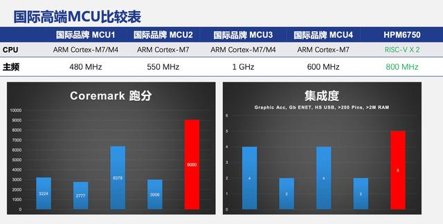

HPM6750¶
HPMicro : RISC-V 816MHz Dual Core USB HS OTG 16bit ADC @2Msps 12bit ADC @5Msps
Xin简介¶
新一代信息采集处理器 边缘计算平台
规格参数¶
基本参数¶
特征参数¶
32-bit 816 MHz Andes D45 Dual Core (32K ICACHE + 32K DCACHE)
2x USB HS OTG (with PHY)
2x 千兆网口
4个CAN FD，17个UART，4个SPI，4个I2C
16bit ADC @2Msps
3x 12bit ADC @5Msps
4 个模拟比较器，多达 28 个模拟输入通道
QSPI/OSPI NOR Flash, PSRAM, HyperRAM/HyperFlash, 16b/32b SDRAM 166 MHz, SD卡和eMMC
24位RGB LCD控制器，1366 x 768，60fps，双目摄像头，2D图形加速和JPEG编解码
4组共32路PWM输出，精度达2.5ns，4个正交编码器接口和4个霍尔传感器接口
集成 AES-128/256, SHA-1/256 加速引擎
芯片架构¶
Performance : Cortex-M85 (6.28 Coremark/MHz) > Andes D45 (5.65 Coremark/MHz) > Cortex-M7 (5.29 Coremark/MHz)
功耗参数¶
电压范围：3.0 to 3.6 V
功耗范围：
Xin选择¶
品牌对比¶
就性能表现和定位而言，HPM6750 系列主要对标NXP i.MX RT 系列
USB/NET |
Cost |
||||||
|---|---|---|---|---|---|---|---|
9220(2) |
2 MB |
2xHS/2xGb |
￥55 |
? |
BGA289/BGA196 |
||
6468(2) |
2 MB |
2xHS/2xGb |
￥54 |
150µA/MHz |
BGA289 |
RT1176C¶
Cortex-M4 + Cortex-M7 MIMXRT1176CVM8A ￥54.36
RT1176C 作为 RT1170 系列中的一款型号，相对 HPM6750 的参数和定价都非常接近
RT1176C的大核 Cortex-M7 最高 800MHz, 小核 Cortex-M4 最高 400MHz, LFBGA289封装0.8P，工作温度范围：-40 to 105 ，官方定价 10K @ CNY54.36
型号对比¶
Note
HPM6x6x/HPM6x5x/HPM6x3x系列间差异在 CAN FD，HPM67xx系列相比HPM64xx系列差异为核心数量
HPM6750 的低配版本包括 HPM6450 和 HPM6350

版本对比¶

HPM6450¶
RISC-V ￥45
Xin应用¶
开发板¶
HPM6750EVK¶
￥568
HPM6750EVKmini¶
￥298

SDK¶
0.11.0
HPM SDK 是HPM推出的一个完全开源，基于BSD 3-Clause许可证的综合性软件支持包，适用于先楫半导体的所有微控制器产品。
此套件中包含先楫半导体微控制器上外设的底层驱动代码，集成了丰富的组件如RTOS、网络协议栈、USB栈、文件系统等，以及相应的示例程序和文档。它提供的丰富构建块，使得用户可以更专注于业务逻辑本身。